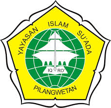
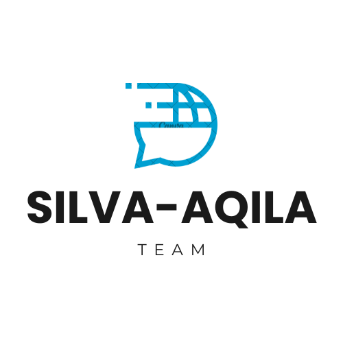

Monitoring Polusi Udara Bus Trans Jawa Tengah üöå
Solusi Cerdas Pengurangan Polusi Udara Bus Trans Jawa Tengah Berbasis Sensor MQ-135 dan Filtrasi Udara Lapisan Bertingkat
Pemprov Jateng
Trans Jateng

MTs Yasua

Tim Silva-Aqila
PM2.5 Rata-rata
25
μg/m³
PM2.5 (Partikel Halus)
Debu dan partikel sangat kecil dari asap knalpot. Berbahaya jika terhirup karena masuk ke paru-paru. Normal: <35 μg/m³
CO2 Rata-rata
780
ppm
CO2 (Karbon Dioksida)
Gas hasil pembakaran bahan bakar bus. Tinggi = pembakaran tidak sempurna. Normal: <800 ppm
MQ-135 Rata-rata
420
ppm
MQ-135 (Sensor Gas Berbahaya)
Mendeteksi campuran gas beracun dari knalpot: NH₃, Benzene, CO. Semakin tinggi = udara semakin kotor. Standar Bersih: ≤400 ppm
NO2 Level
35
ppb
NO2 (Nitrogen Dioksida)
Gas beracun dari pembakaran mesin diesel. Menyebabkan iritasi mata dan gangguan pernapasan. Normal: <50 ppb
Bus Aktif
12
dari 12 unit
Status Armada
Jumlah bus yang sedang beroperasi dan mengirim data sensor secara real-time.
Sistem Filtrasi
STANDBY
0 Unit Aktif
Status Sistem Filtrasi
Jumlah bus yang sistem filtrasinya sedang beroperasi membersihkan udara kotor.
Pemantauan Filtrasi Udara Bus
●Sistem Standby
üîç Pemantauan Sistem Filtrasi Udara
Sistem filtrasi udara bekerja otomatis saat sensor MQ-135 mendeteksi udara kotor melebihi standar (>400 ppm). Pilih bus untuk memantau sistem filtrasi secara detail.
⬇️
Penyedotan Udara Kotor
Sistem Standby
Standby
⬆️
Pengeluaran Udara Bersih
Sistem Standby
Standby
üìã Cara Kerja Sistem Filtrasi:
1. Penyedotan Udara Kotor: Menghisap udara kotor dari dalam bus saat MQ-135 > 400 ppm
2. Pengeluaran Udara Bersih: Mengeluarkan udara yang telah difilter untuk sirkulasi udara bersih
3. Aktivasi Otomatis: Sistem bekerja otomatis berdasarkan pembacaan sensor MQ-135 secara real-time
üìä Grafik Monitoring Real-time
üöç Status Bus & Sistem Filtrasi
ℹ️ Info: Pilih bus untuk memantau sistem filtrasi. Sistem filtrasi bekerja otomatis saat MQ-135 > 400 ppm (standar udara kotor).
⚠️ Peringatan & Alert
üìö Penjelasan Parameter:
Parameter Monitoring Polusi dan Standar Aman:
• PM2.5 (μg/m³): Berat partikel debu per meter kubik udara - Standar aman: ≤35 μg/m³
• CO2 (ppm): Konsentrasi karbon dioksida dari pembakaran - Standar normal: ≤800 ppm
• MQ-135 (ppm): Tingkat udara kotor campuran - Standar bersih: ≤400 ppm
• NO2 (ppb): Nitrogen dioksida - 1000x lebih sensitif dari ppm - Standar aman: ≤50 ppb
• Sistem Filtrasi Udara: Bekerja otomatis saat MQ-135 melebihi standar (>400 ppm) untuk membersihkan udara kotor